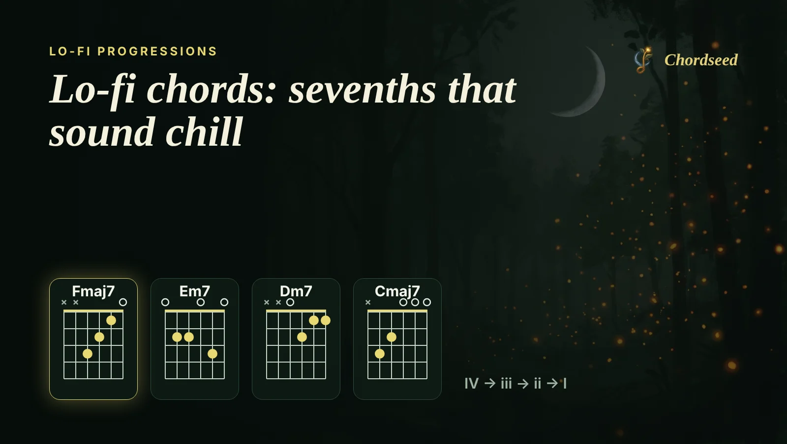

6 progresiones de acordes lo-fi (y por qué suenan tan relajadas)
El lo-fi suena relajado y un poco nostálgico, como estudiar de noche con lluvia en la ventana. Casi todo ese ambiente viene de los acordes. Aquí tienes seis progresiones para empezar y las razones por las que funcionan.

¿Qué hace que unos acordes suenen “lo-fi”?
- Séptimas y novenas. En vez de C o Am a secas, el lo-fi usa Cmaj7, Am9, Dm7. Las notas extra hacen que los acordes suenen suaves y sin resolver.
- Loops cortos. Dos o cuatro acordes que se repiten una y otra vez, para que quien escucha se relaje.
- Movimiento de jazz. Muchos loops toman el ii–V–I del jazz, pero más lento.
- Tempo lento con swing. Normalmente entre 70 y 90 BPM, con una batería que se siente un poco perezosa y atrasada.
1. El loop descendente
Cada acorde baja un escalón. Se siente como un suspiro lento.
2. El ciclo de jazz
El clásico 1–6–2–5. Nunca se siente terminado, y eso es perfecto para un loop.
3. El ii–V–I con novenas
El mismo movimiento de jazz con colores más ricos. Cambia G9 por G13 si lo quieres todavía más soñador.
4. El vamp menor de dos acordes
Solo dos acordes, pero con novenas suenan profundos. Ideal para poner melodías o samples encima.
5. El menor agridulce
El E7 agrega un momento de tensión antes de volver a Am. Melancólico y de película.
6. El impulso neo-soul
El A7 no pertenece a la tonalidad de C: es una dominante secundaria que empuja hacia Dm7 y le da al loop un toque soul.
Consejos para que suene bien
- Toca suave. Un piano eléctrico o una guitarra limpia y cálida funcionan mejor. Evita rasgueos fuertes.
- Usa posiciones cercanas. Mueve la menor cantidad de dedos posible entre acordes para que el loop fluya.
- Deja respirar. Un acorde por compás, a veces dos compases, es más que suficiente.
- Agrega textura. El ruido de vinilo, la lluvia o el siseo de cinta son parte del género, pero los acordes van primero.
Pruébalo en Chordseed
En Chordseed, elige el estilo Lo-fi hip hop y un ánimo soñador o melancólico. El generador te sugiere séptimas y novenas relajadas y toca tu loop con un ritmo tranquilo y un bajo detrás. Gratis, en tu navegador.
Abrir la app →